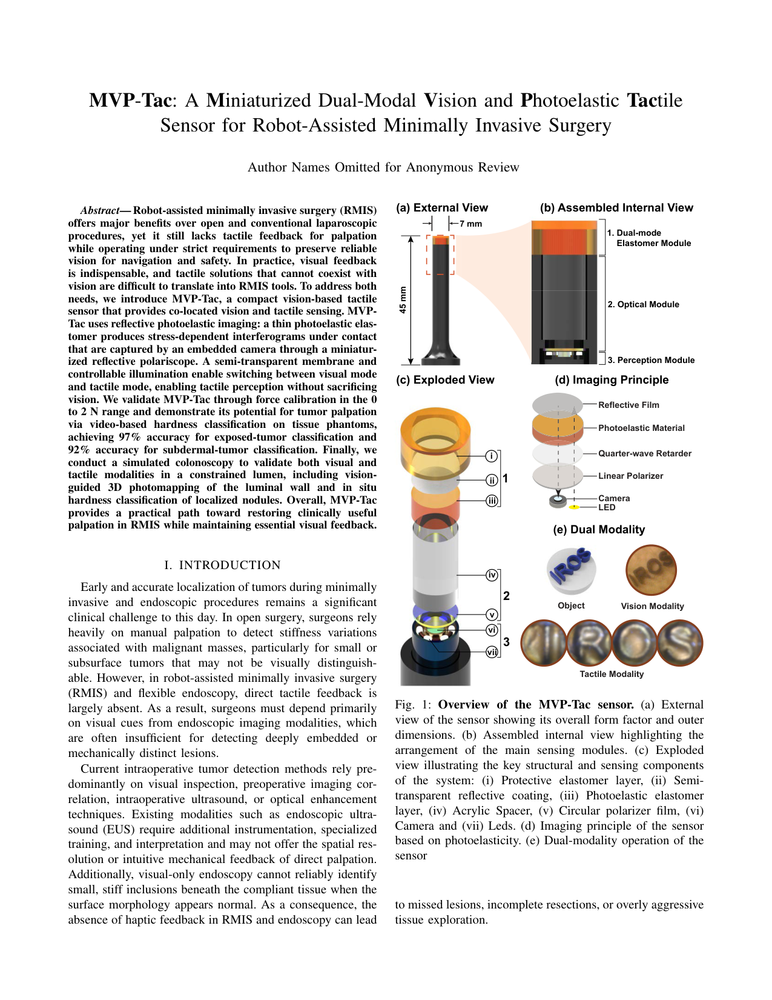
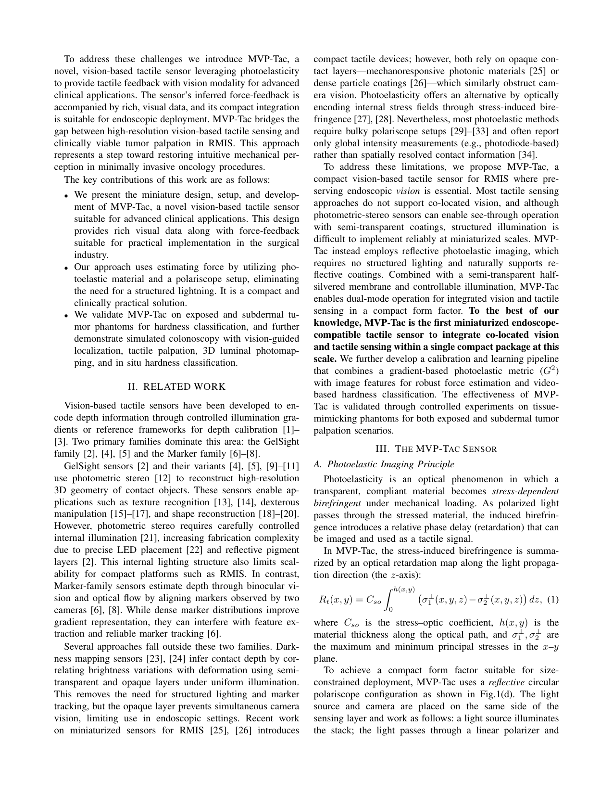
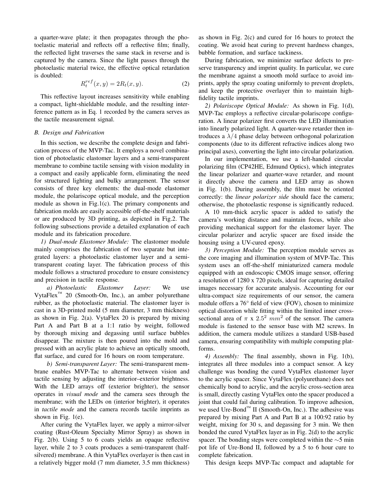
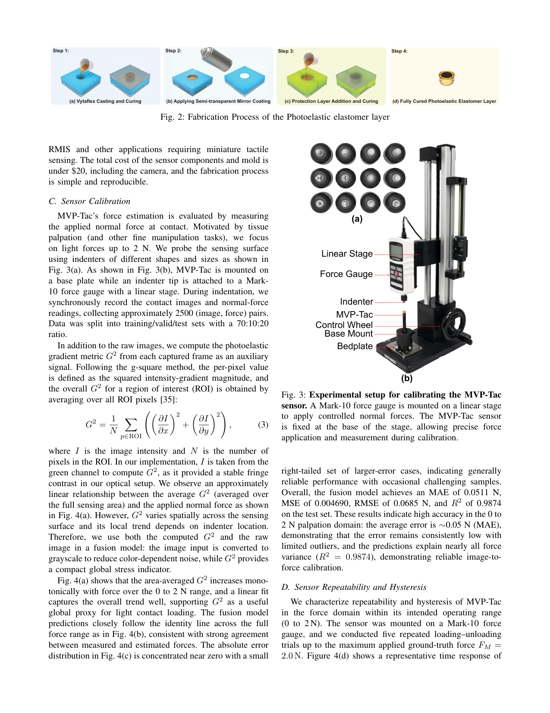
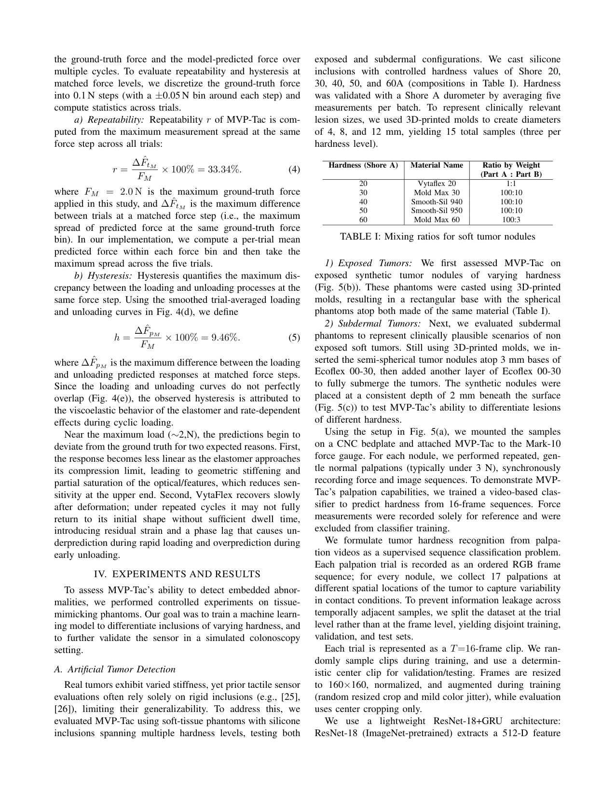
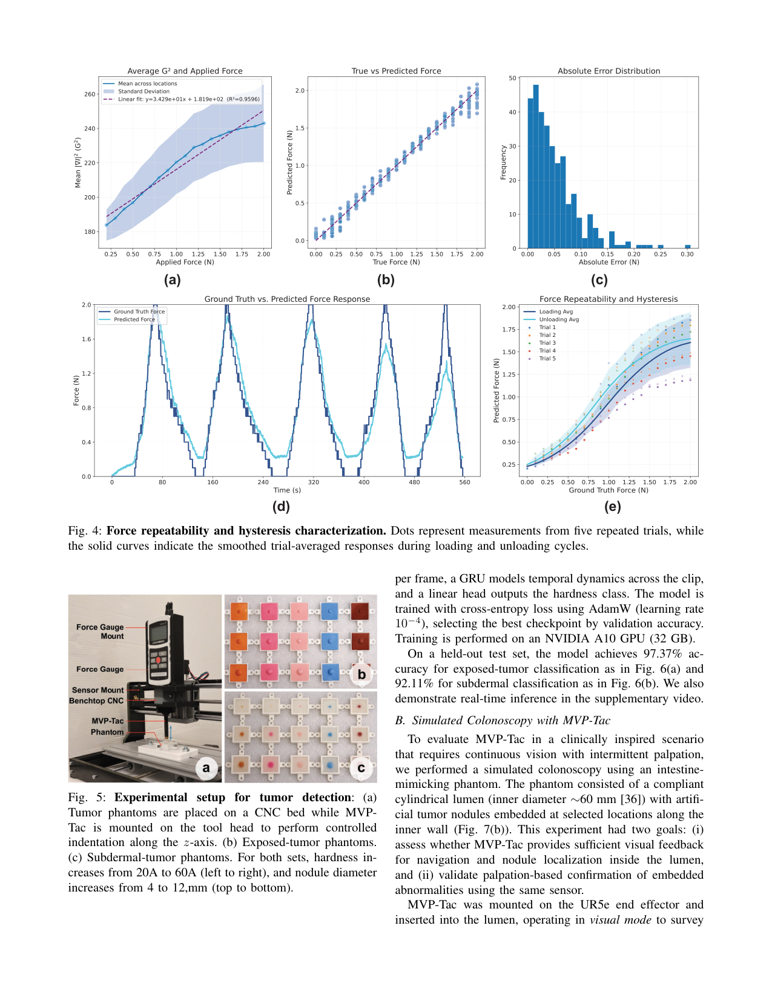
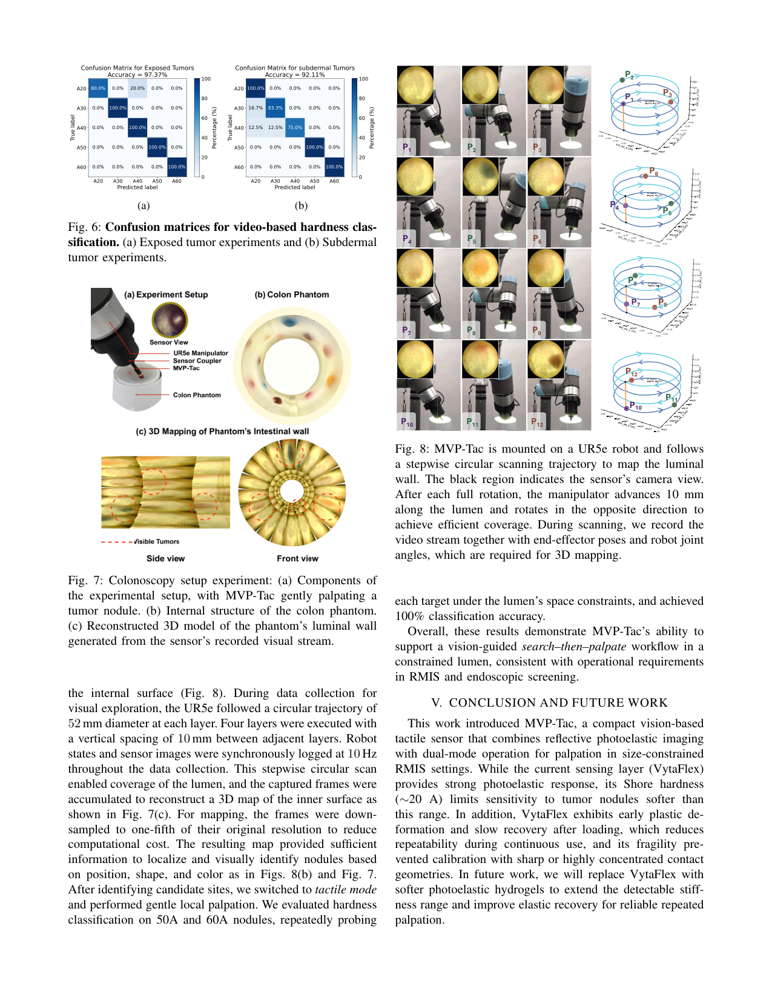
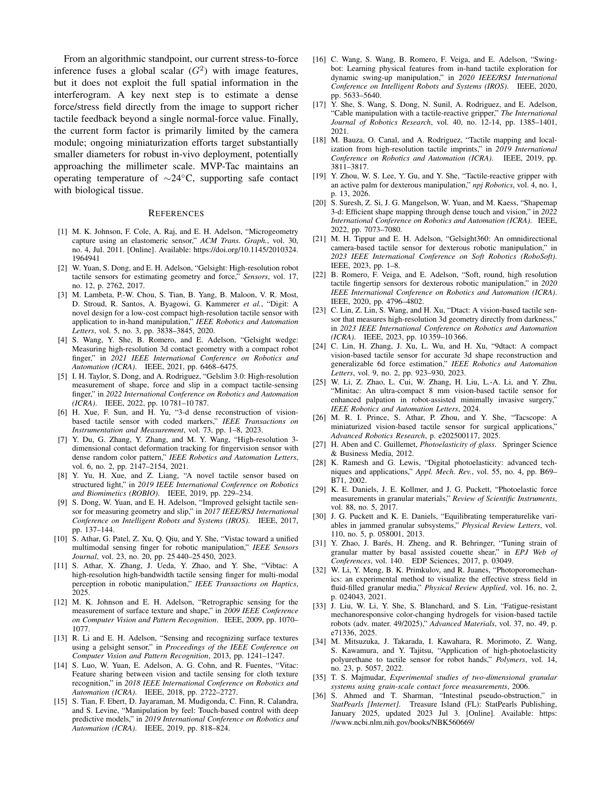
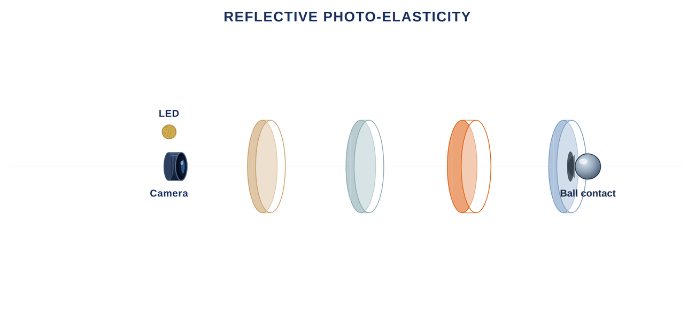
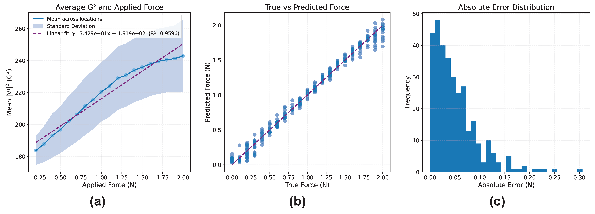

First Endoscopic VBTS with Co-Located Vision and Tactile Sensing for RMIS
IEEE/RSJ International Conference on Intelligent Robots and Systems (IROS)
Purdue University | Stony Brook University | Michigan State University
Robot-assisted minimally invasive surgery offers major benefits over open and conventional laparoscopic procedures, yet it still lacks tactile feedback for palpation while operating under strict requirements to preserve reliable vision. MVP-Tac is a compact vision-based tactile sensor that provides co-located vision and tactile sensing using reflective photoelastic imaging. A thin photoelastic elastomer generates stress-dependent interferograms under contact, while a semi-transparent membrane and controllable illumination enable switching between visual and tactile modes. MVP-Tac is validated through force calibration in the 0–2 N range, video-based hardness classification on exposed and subdermal tumor phantoms, and a simulated colonoscopy experiment with vision-guided 3D photomapping and in situ hardness classification.








Miniaturized form factor designed for endoscopic and RMIS-related deployment.
Switches between visual mode and tactile mode using controllable illumination and a semi-transparent membrane.
Force calibration range targeting light palpation and fine contact-rich surgical interaction.
Video-based hardness classification accuracy for exposed and subdermal tumor phantoms.
MVP-Tac combines a dual-mode elastomer module, a reflective circular-polariscope optical module, and a compact perception module. The tactile mode uses stress-induced birefringence in a photoelastic elastomer, while the vision mode allows the camera to see through the semi-transparent membrane when external illumination dominates.
This design avoids structured lighting and supports a compact configuration suitable for constrained surgical environments where visual feedback and tactile palpation must coexist.


MVP-Tac uses image features together with a photoelastic gradient metric, G², for force estimation. The fusion model achieved MAE = 0.0511 N, RMSE = 0.0685 N, and R² = 0.9874 on the test set in the 0–2 N range.
A ResNet-18 + GRU video classifier predicts tumor hardness from 16-frame palpation clips, achieving 97.37% accuracy for exposed tumor phantoms and 92.11% accuracy for subdermal tumor phantoms.
MVP-Tac was mounted on a UR5e robot and inserted into an intestine-mimicking phantom to demonstrate a vision-guided search-then-palpate workflow. The system visually scanned the lumen, reconstructed a 3D photomap of the luminal wall, localized nodules, and then switched to tactile mode for local hardness classification.
Supplementary video will be added here.
@inproceedings{prince2026mvptac,
title={MVP-Tac: A Miniaturized Dual-Modal Vision and Photoelastic Tactile Sensor for Robot-Assisted Minimally Invasive Surgery},
author={Prince, Md Rakibul Islam and Kim, Jaeeun and Zhao, Yuhao and Vrshek, Mason and Sama, Shivani Reddy and Khera, Adyaa and Athar, Sheeraz and Xu, Zijie and Liu, Jiabin and Lin, Shaoting and Li, Wei and She, Yu},
booktitle={IEEE/RSJ International Conference on Intelligent Robots and Systems (IROS)},
year={2026}
}